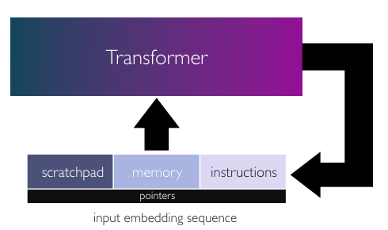
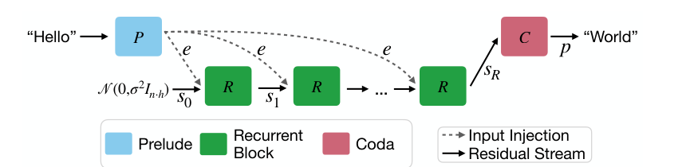

Looped transformers turn depth into a dial
Giannou et al. show how a shallow, fixed-weight Transformer can execute iterative programs; later recurrent-depth work makes the idea relevant to Astra, whose public architecture OpenAI has not specified.
Looped Transformers as Programmable Computers
Read the paperWe present a framework for using transformer networks as universal computers by programming them with specific weights and placing them in a loop. Our input sequence acts as a punchcard, consisting of instructions and memory for data read/writes. We demonstrate that a constant number of encoder layers can emulate basic computing blocks, including embedding edit operations, non-linear functions, function calls, program counters, and conditional branches. Using these building blocks, we emulate a small instruction-set computer. This allows us to map iterative algorithms to programs that can be executed by a looped, 13-layer transformer. We show how this transformer, instructed by its input, can emulate a basic calculator, a basic linear algebra library, and in-context learning algorithms that employ backpropagation. Our work highlights the versatility of the attention mechanism, and demonstrates that even shallow transformers can execute full-fledged, general-purpose programs.1
The Astra connection is a report, not a specification
OpenAI’s public Astra announcement describes a model by its behavior: alignment, computer use, safeguards, and benchmark performance. The announcement does not name a looped Transformer or recurrent depth.2 The system card discusses chain-of-thought control, evaluation awareness, sandbagging, and a decline in monitorability. It also does not identify recurrent depth as the model’s architecture.3
The link comes from secondary reporting. The Verge says The Information, citing an unnamed person familiar with the unreleased model, reported that Astra uses recurrent depth: computation is cycled through internal layers before an answer is produced. The Verge also reports that OpenAI did not confirm or deny the claim, and that OpenAI’s own announcement did not describe the technical foundation.4 That is enough to ask whether looped-transformer research explains the rumor. It is not enough to state that Astra uses the design, or that the design caused its safety or benchmark results.
The useful technical question is narrower. A standard Transformer has a fixed stack of layers, each with its own parameters. A looped Transformer applies a shared block repeatedly. The block can update a hidden state, read the original input again, and hand its output to the next pass. The weights stay fixed while the amount of serial computation changes. That gives a model a depth dial: storage is set by the block, while effective depth is set at execution time.1 The papers below show what has to be engineered for that simple idea to become a computer, a learning algorithm, or a language model.
Universal Transformer made depth recurrent
The earliest important predecessor is Dehghani and colleagues’ Universal Transformer, introduced in 2018 and published at ICLR 2019. It is not a decoder-only looped language model, and it is not the first recurrent neural architecture. Its contribution is more specific: it makes the Transformer’s depth axis recurrent. All sequence positions are updated in parallel. At each step, self-attention exchanges information across positions, then a transition function shared across positions and steps refines the representations.5
That distinction matters. A recurrent neural network normally advances through positions in a sequence. Universal Transformer recurrence advances through revisions of the representation at each position. A fixed number of revisions is equivalent to a stack with tied parameters. A dynamic halting rule lets different positions stop after different numbers of revisions. Under stated assumptions, the authors prove a form of computational universality and report gains on algorithmic tasks, LAMBADA, and WMT14 English–German translation, where their base model improves over the comparison Transformer by 0.9 BLEU.5
Universal Transformer supplies the family resemblance. The 2023 paper makes the construction legible as a machine.
Giannou’s loop turns attention into a small computer
Giannou et al. do not begin with a trained model discovering that loops are useful. They specify weights that make attention perform named operations, then place the Transformer in an external loop. The input sequence is a punchcard. One region holds instructions. Another is working memory. A third is a scratchpad for intermediate values. After one pass, the output sequence becomes the next input, so the model can fetch the next instruction while preserving the state of the computation. Their Figure 1 is a compact picture of that interface.1

The instruction set is the paper’s main technical trick. The construction starts from SUBLEQ, a one-instruction computer whose operation subtracts one memory value from another and branches when the result is nonpositive. Giannou et al. generalize it to FLEQ: mem[c] = f_m(mem[a], mem[b]), followed by if mem[flag] \leq 0 goto instruction p. The function slot can select matrix multiplication, nonlinear functions, or polynomials. Attention does the addressing, and the hard-coded function blocks do the arithmetic.1
The rest is bookkeeping that ordinary software takes for granted. Binary positional encodings represent addresses. Attention copies data between memory and the scratchpad. ReLU-based blocks implement conditional behavior. Other blocks maintain a program counter and make function calls. The paper proves a 9-layer, 2-head construction for SUBLEQ-style programs. Its matrix-inversion, power-iteration, and stochastic-gradient-descent examples use 13 layers and one head in the summary table.1
The loop changes the scaling law. Without feedback, a fixed-depth network would need more layers as the program gained instructions. With feedback, the network’s own depth stays constant while the number of cycles grows with the program. Total work still grows with the number of instructions. The result is not a faster computer. It is a way to separate the size of the instruction executor from the length of the program it runs.1
This is why the paper is significant. It turns weight sharing from a parameter-count observation into an explicit computational model. The limitation is equally important: the weights are constructed for the programs, and the input supplies the program. That is a proof of expressivity, not evidence that a normally trained language model has learned the same computer.
A trained loop has to learn an update rule
Yang and colleagues ask a more practical question: can a looped Transformer learn an iterative algorithm from data? Their test case is in-context linear regression. A standard Transformer can approximate a closed-form least-squares computation involving (X^\top X)^{-1}X^\top y. Gradient descent avoids the inverse by repeatedly applying an update based on X^\top(Xw-y). A loop gives the model a natural place to apply that update again.6
Their one-layer looped model has 0.79 million parameters. The comparison 12-layer Transformer has 9.48 million. In the reported linear-regression setup, the looped model reaches performance comparable to the standard model while using less than 10% as many parameters. The authors train for 30 loop iterations, then observe a stable fixed-point solution beyond the trained range in the illustrated experiment.6
Two design choices make that result possible. First, the original prompt is injected at every pass. If the recurrence receives only its previous state, the initial data can fade and the model can diverge after the number of passes seen in training. Second, the training loss covers a range of loop outputs rather than rewarding only the final pass. The model is pushed toward an operator whose later applications remain useful, instead of a circuit that works at one exact depth.6
The result has a boundary. The experiments cover synthetic linear, sparse-linear, decision-tree, and two-layer neural-network function classes. The authors report an inductive bias toward simpler solutions and a failure mode under some distribution shifts; they do not show that the model has recovered a general regression algorithm for every input distribution. Parameter efficiency therefore comes with a question about what algorithm the loop has actually learned.
Recurrent depth makes the dial useful at language-model scale
Geiping and colleagues provide the closest public technical bridge to the Astra report. Their 2025 model is a decoder-only language model split into a prelude P, a shared recurrent core R, and a coda C. The prelude embeds the tokens. The core is applied repeatedly. The coda turns the last latent state into next-token probabilities. The core sees both the current latent state and an injected copy of the original input, which gives each iteration access to the problem it is solving.7
- RThe shared recurrent block applied at every depth step.
- rThe number of recurrent passes chosen for this computation.

The engineering is as important as the diagram. The core uses ordinary causal attention, rotary position embeddings, a gated SiLU MLP, RMSNorm, and a sandwich normalization arrangement chosen to stabilize repeated application. The large model has a (2, 4, 2) prelude/core/coda shape. It has eight “real” layers before recurrence, but 32 passes unfold to an effective depth of 2 + 4\times32 + 2 = 132 layers.7
Training must teach the model to remain useful across depths. The authors sample the recurrence count from a heavy-tailed log-normal Poisson distribution and backpropagate through only the last eight iterations. That approximates truncated backpropagation through time while allowing long occasional unrolls without storing every activation. Their proof of concept has 3.5 billion parameters and trains on 0.8 trillion tokens. At test time, the reported ARC-E score rises from 49.07 at four recurrences to 69.91 at 32 recurrences. The same paper warns that the run is a proof of concept and that more compute per parameter still means more inference work.7
This is the bridge to a frontier model. Giannou’s Transformer executes a program supplied by its input. Geiping’s model learns a shared latent computation from ordinary language-model training and exposes recurrence as a test-time budget. The common operation is weight reuse across depth. The learned behavior is not the same, and the evidence does not support treating one as a direct implementation of the other.
Latent reasoning adds depth, then asks how to pay for it
Saunshi and colleagues give the idea a reasoning interpretation. They study a k-layer block looped L times, written as k \otimes L. The effective depth is roughly kL, but the parameters belong mostly to the smaller block. Their theoretical analysis treats intermediate hidden states as latent thoughts: repeated application can simulate multiple steps of a token-level chain of thought without emitting a token at every step. Experiments on synthetic addition, p-hop, and math tasks, along with language-model evaluations, compare looped models against both parameter-matched and compute-matched fixed-depth baselines.8
That vocabulary explains why recurrent depth might matter for Astra. A model can spend extra serial computation in a hidden state rather than spend it on visible reasoning tokens. But “latent” describes where the intermediate state lives, not whether the computation is safe, accurate, or inaccessible to monitoring. A loop can be used for ordinary feature refinement, algorithm emulation, or reasoning. The architecture alone does not identify which behavior was learned.
The next technical problem is uneven difficulty. Mixture-of-Recursions keeps a shared stack but adds lightweight routers that assign different recursion depths to different tokens. It combines token-level stopping with attention restricted to active tokens and a selective key-value cache. This is a later engineering direction, not evidence about Astra, but it shows how a fixed loop can become an adaptive compute allocator rather than a single global knob.9
There is also a cost that the phrase “same weights” can hide. Reusing parameters can lower storage and communication per pass. Repeating the pass increases serial FLOPs and can increase latency. Training stability, residual scaling, activation memory, and KV-cache behavior become part of the architecture. A loop trades parameter breadth for computation in depth. It does not create free intelligence.
Nor does looping alone make a chain of thought disappear. Sebastian Raschka’s technical discussion of the Astra report makes the narrower point that reusing layers does not inherently suppress visible reasoning; it may reduce intermediate tokens only when the model is trained and used to carry more work in latent states.10 That distinction matters for any claim about Astra’s monitorability.
What the papers establish, and what they do not
The technical lineage is clear. Universal Transformer makes the depth axis recurrent and can halt at different times. Giannou et al. show that a constant-depth, fixed-weight Transformer can act as an instruction executor with memory, pointers, branches, and reusable function blocks. Yang et al. show that a trained loop can learn an iterative solver with a much smaller parameter count on controlled in-context tasks. Geiping et al. show how to train a language model to use recurrent depth as a test-time compute budget. Saunshi et al. give a theory of the same budget as latent thought depth.1
The Astra claim remains one level weaker. OpenAI’s public announcement and system card establish performance and safety findings, including lower monitorability in some settings, but they do not establish a looped-transformer architecture.3 The Verge’s account of The Information supplies a reported recurrent- depth connection, but the source is unnamed and unconfirmed.4 The papers make the report technically plausible. They do not prove that Astra copied Giannou’s construction, uses Geiping’s training recipe, or gained its benchmark and safety properties from recurrence.
The right study order is therefore Giannou first, Universal Transformer for lineage, and Geiping for the language-model bridge. The durable idea is a resource trade: reuse a learned block to buy serial depth, then train the block to remain stable and useful across the depths a deployment may request. That is a real technical innovation with real costs. It is also the most the public evidence can support about Astra today.
Sources
- Angeliki Giannou et al., “Looped Transformers as Programmable Computers” · ICML 2023
- OpenAI, “GPT-6 Astra: A new generation of intelligence” · 2026
- OpenAI, “GPT-6 Astra System Card” · 2026
- The Verge, “Researchers fear safety disaster ahead of OpenAI’s Astra release” · 2026
- Mostafa Dehghani et al., “Universal Transformers” · ICLR 2019
- Liu Yang et al., “Looped Transformers are Better at Learning Learning Algorithms” · ICLR 2024
- Jonas Geiping et al., “Scaling up Test-Time Compute with Latent Reasoning: A Recurrent Depth Approach” · 2025
- Nikunj Saunshi et al., “Reasoning with Latent Thoughts: On the Power of Looped Transformers” · ICLR 2025
- Sangmin Bae et al., “Mixture-of-Recursions: Learning Dynamic Recursive Depths for Adaptive Token-Level Computation” · NeurIPS 2025
- Sebastian Raschka, “OpenAI Astra and Looped Transformers” · 2026